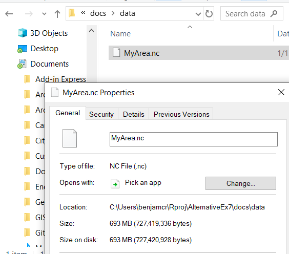
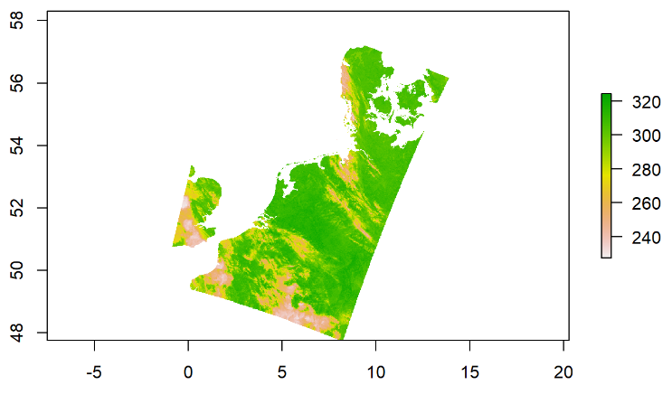
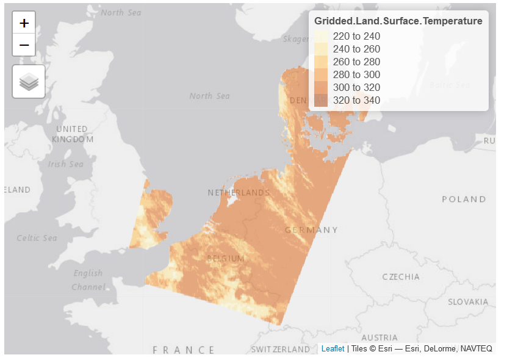
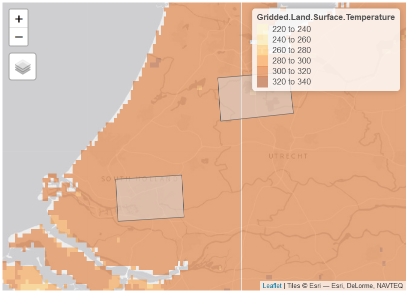
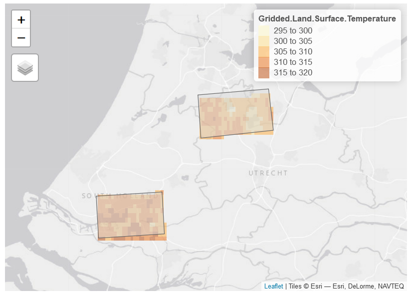
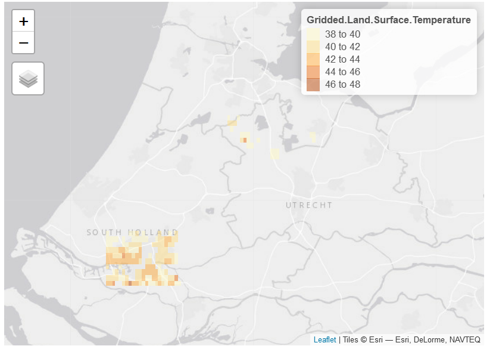
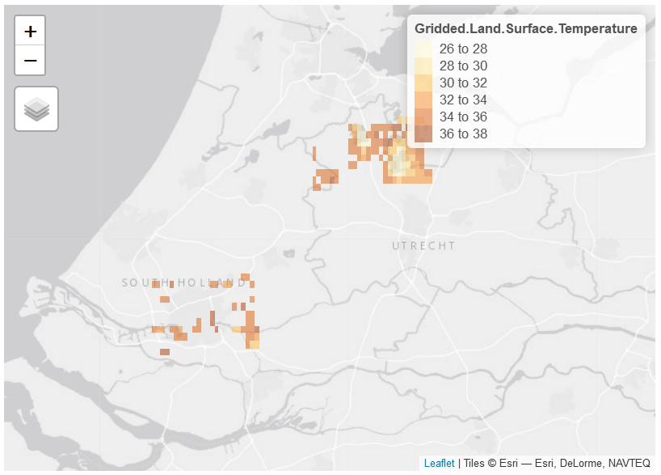
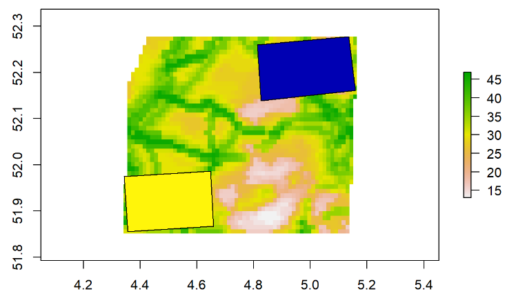
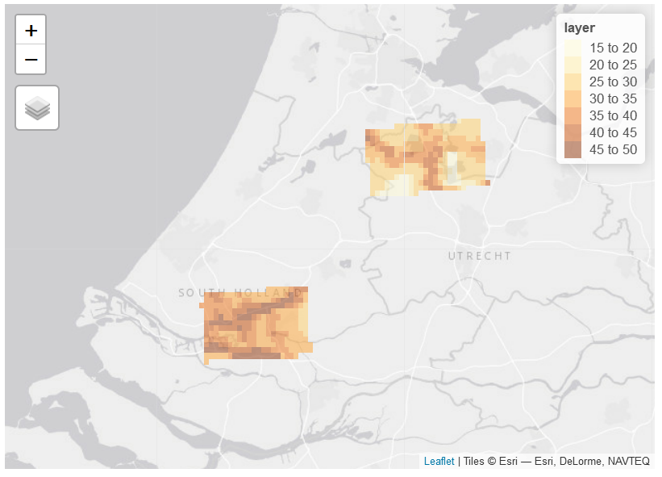
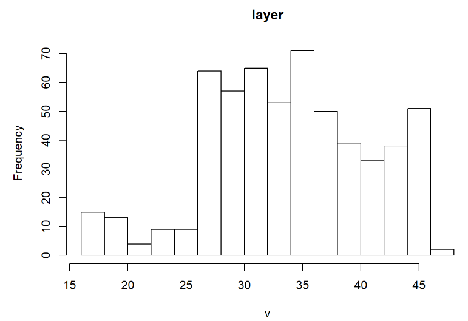

The satellite data provided as a NetCDF (Network Common Data Form) file. NetCDF files are used for storing multidimensional scientific data such as temperature, humidity, pressure, wind speed and direction.
Many organizations and scientific groups in different countries have adopted netCDF as a standard way to represent some forms of scientific data and thus getting familiar with this kind of data is important.
Contrary to ArcGIS, opening a .nc file in R is very straightforward. You will only need to install the library raster which is used quite extensively.
install.packages('raster)Then you can upload the library in R
library(raster)## Loading required package: spThen you need to import the .nc file in R. For this you need to specify the “path”. Find your .nc file that you created in Part A, click right on it and find properties as shown below:

You can copy paste the path and use it to import your raster in R. Don’t forget to also write the name of your file. Finally you have all the information to import the raster in R. The .nc file has multiple bands contained in it. However, we are only interested in Land Surface Temperature, we need to specify this with the argument varname:
# Import the raster
area <- raster('C:/Users/benjamcr/Rproj/AlternativeEx7/docs/data/MyArea.nc',
varname = 'LST')
# Plot the raster to check
plot(area) You can also have a more fancy vizualisation:
# Load the library
library(tmap)
# Set tmap to interactive mode
tmap_mode('view')## tmap mode set to interactive viewing# plot
tm_shape(area) +
tm_raster(alpha = .5) Now you should be able to visualize a raster showing the land surface temperature across part of Europe (note that the temperature is in Kelvin and not degree Celsius, we will convert the unit later in the exercise).
Now it’s time to import the frames delaminating the area of interest that we provided on Blackboard.
As done previously you need to find the path to your file and import it. The frame being a shapefile we need the library sf to load it.
# Load library
library(sf)
# Import the frame
frame <- read_sf('C:/Users/benjamcr/Rproj/AlternativeEx7/docs/data/Frame_gcs/Frame_gcs.shp')
# Vizualize the shapefile
tm_shape(frame) +
tm_polygons(alpha = .5) +
tm_shape(area) +
tm_raster(alpha = .5) You will see 2 frames in the plots, these will be the two areas of interest.
We are interested in identifying UHI and Urban Cold Islands only in the areas of interests. We will use the two frames to isolate the pixels located in the zone of interest. This is done using the function mask:
# Extract area of raster by "mask"
interest <- mask(area, frame)
# Vizualise if the operation has been successful
tm_shape(frame) +
tm_polygons(alpha = .5) +
tm_shape(interest) +
tm_raster(alpha = .5) # Convert unit and find the mean value of the study areas
To make more sense of the data we first need to convert the degree Kelvin in degree Celsius.
In R this is simple, we just need to substract the temperature in each cell by 273.15
interest_celsius <- interest - 273.15Then, to find the average temperature within your study areas you need to use the function cellStat:
mean <- cellStats(interest_celsius, stat = 'mean', na.rm = TRUE)What is the mean temperature in degree celsius in your study area?
Urban heat islands are defined as areas being one degree (or more) warmer than its surrounding. To isolate the pixels corresponding to this definition we do the following:
# Isolate the pixels which are 1 degree higher than the mean temperature of the study area
uhi <- mask(x = interest_celsius,
mask = interest_celsius > (mean + 1),
maskvalue = 0)
# Isolate the pixels which are 1 degree below the mean temperature of the study area
uci <- mask(x = interest_celsius,
mask = interest_celsius < (mean - 1),
maskvalue = 0)# Plot Urban heat Islands
tm_shape(uhi) +
tm_raster(alpha = .5)
# Plot Urban cool islands
tm_shape(uci) +
tm_raster(alpha = .5)
In the folder you downloaded on blackboard you will find a raster (.tif) layer of the human footprint (wildareas-v3-2009).
The Human Footprint index is a measure of human disturbance across the landscape. Ranging from 0 to 50, the HFI is a raster representing multiple variables related to human impact on the landscape (e.g. the extent of built environment, cropland, pasture land, human population density, nighttime lights, railways, roads and navigable waterways). In this exercise we use the HFI as a proxy for built environment.
To import it in R we use the same function as we did to import the raster of temperatures (don’t forget to update the path!):
# Open the raster
HFI <- raster('docs/data/HumanFootprint/wildareas-v3-2009-human-footprint.tif')
# R assigns values in the see, resulting in a wrong vizualisation. We know that the upper bound for Human Footprint is 50 so we need to extract the pixels that are 50 or less:
#HFI <- HFI[HFI <= 50]
# However I cannot do that here as the result is too large and is impossible to vizualize in this document
# Vizualise the raster
tm_shape(HFI) +
tm_raster(alpha = .5)In this section we will compare the human footprint between the Urban Heat Islands and the Urban Cold Islands. First you need to isolate the HFI pixels corresponding to the frames used to compute the UHI and UCI.
This step is more complicated than the others as it requires us to re-project the HFI raster
# We first extract the Coordinate Reference System (crs) of the raster because the Frame shapefile doesn't have the same crs
c <- crs(HFI)
# We transform the CRS of frame using the CRS of human footprint
frame_crs <- st_transform(frame, c)
# We crop the HFI raster on the extent of the Frame shapefile. We do that for computation ease, if we do the next operation on the full raster, this will take time
hfi_frame <- crop(HFI, frame_crs)
# We isolate the pixels less or equal to 50 for the reason we mentioned above
hfi_frame_correct <- hfi_frame[hfi_frame<50, drop = FALSE]
# We finally reproject the raster using the crs of Frame
pro <- projectRaster(hfi_frame_correct, crs = crs(frame))
# We quickly check if the operation has been successful
plot(pro)
plot(frame, add = TRUE)
# Now we only isolate the zones of interest using the function mask as done previously
m <- mask(pro, frame)
# We vizualise the result:
tm_shape(m) +
tm_raster(alpha = .5)
We will visually compare the distribution of Human Footprint within area of interest
Nothing more simple ni R! You only need to use the function hist:
hist(m)
In your handout respond to the following questions:
mean function). Can you explain why? 2. Make a hypothesis of why there is some areas that are warmer than others? Change the base map and explore where are placed the pixels of UHI and UCI in the Human Footprint map 3. How would you test your hypothesis?Then include the following maps:
tmap_mode options.